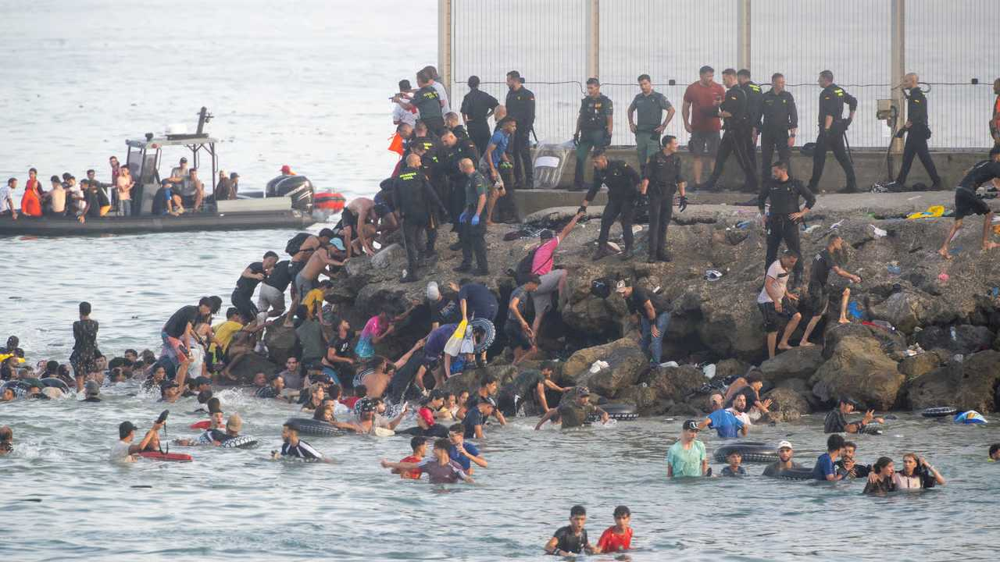

Ceuta: Die Rechnung für Europa

Menschen rennen durch die Brandung. Andere klettern über Zäune. Hinter ihnen Marokko, vor ihnen Europa.
Die Bilder aus Ceuta sehen aus wie eine Invasion. Sie machen Angst, weil sie zeigen, wie wenig von einer Grenze übrig bleibt, wenn der Staat erst reagiert, nachdem Tausende durch sind.
Seit dem 20. Juli drängen Menschen aus Marokko nach Ceuta. In zehn Tagen kamen zwischen 1.500 und 2.000 über das Meer. Die Unterkünfte der Stadt liefen voll.
Am Donnerstag, dem 30. Juli, kam der Höhepunkt: Tausende rannten und schwammen gleichzeitig über die Grenze. Nach den Hilferufen aus Ceuta und dem Druck auf Madrid schickt die Regierung Soldaten.
Ceuta liegt in Afrika. Aber Ceuta ist Spanien. Und damit Europa.
Die Grenze fällt nicht erst, wenn Menschen am Strand stehen. Sie fällt, wenn der Staat die Kontrolle erst organisiert, nachdem sie längst verloren ist. Seit Ende Juni darf Spanien Menschen, die schwimmend Ceuta erreichen, nicht mehr einfach im Schnellverfahren zurückweisen. Es braucht ein individuelles Verfahren.
Verfahren. Das Wort, das aus einer Grenze einen Wartesaal macht.
Nur vier Wochen vor der Eskalation in Ceuta endete das größte Regularisierungsprogramm der Regierung Sánchez. Bis zum 30. Juni gingen 1.174.978 Anträge ein: auf Aufenthalt und Arbeit.
Wer vor dem 1. Januar in Spanien war, fünf Monate Aufenthalt nachweisen kann und nicht im Strafregister steht, kann bleiben. Kein Sprachtest. Kein Abschluss. Kein Nachweis, dass seine Arbeit nicht auch ein Spanier machen könnte.
Ein spanischer Aufenthaltstitel öffnet den Schengen-Raum. Wer in Deutschland oder Österreich lebt, trägt die Folgen dieser EU-Reisefreiheit mit.
Humanität nennt Sánchez das. Die nüchternere Erklärung liefert die Arbeitsmarktlogik: Arbeitgeber wollen billige Arbeitskräfte. PSOE und Podemos stellen ihnen einen legalisierten Arbeitskräftepool im Millionenmaßstab bereit.
Die Arbeiterpartei macht das Angebot größer. Der Lohnzahler trägt das Risiko. Der Arbeitgeber kassiert den Vorteil.
Und das Cui bono? Aufenthalt heute. Einbürgerung morgen. Wählerstimmen danach.
Marokkos König begnadigte im Mai 1.376 Verurteilte, darunter 20 aus Terror- und Extremismusverfahren. Europas Außengrenze steht potenziellen Straftätern offen, deren Vergangenheit unsere Behörden weder kennen noch prüfen können.
Ceuta ist kein spanisches Randproblem. Es ist die Rechnung für ein Europa, das Grenzverletzungen verwaltet, statt sie zu verhindern – und die Folgen an seine Bürger delegiert.
Wer Ceuta für ein spanisches Problem hält, hat Schengen nicht verstanden.
Mehr dazu: Wie die EU uns schützen will.